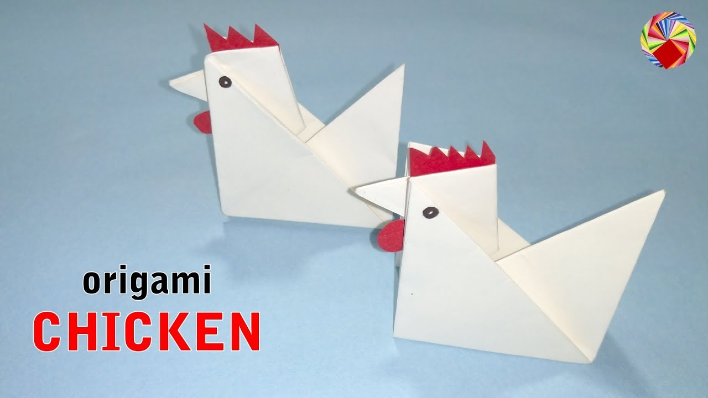
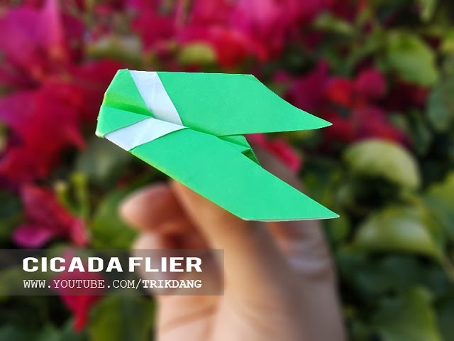

So the first origami is...
The crane!  Click here to learn to make oneAn ancient Japanese legend promises that anyone who folds a thousand origami cranes will be granted a wish by the gods. Some stories believe you are granted happiness and eternal good luck, instead of just one wish, such as long life or recovery from illness or injury. This makes them popular gifts for special friends and family. The crane in Japan is one of the mystical or holy creatures and is said to live for a thousand years: That is why 1000 cranes are made, one for each year. In some stories it is believed that the 1000 cranes must be completed within one year and they must all be made by the person who is to make the wish at the end.
moving on to the next birdSo the second bird is...
The chicken!  Click here to learn to make oneI dont know about you guys, but I definitely love chickens. They are so funny and cute also the rooster is the living alarm clock, or atleast for me.
moving on to next and last origamiWelcome...
The humanbird!!!  Click here to learn to make oneThe human bird or the plane is... well, a plane of course.